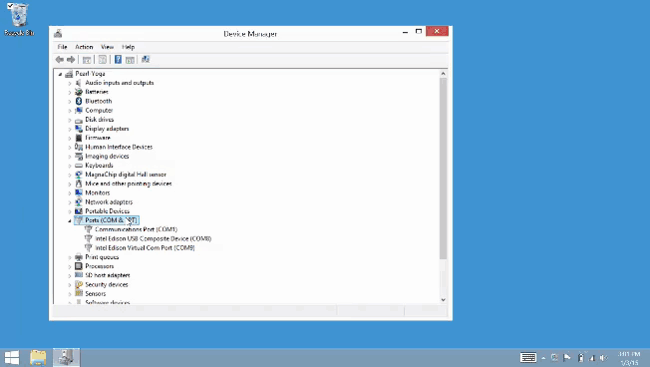
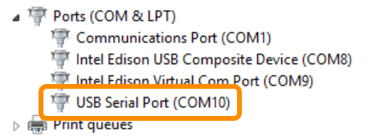

Confirm installation of FTDI serial drivers
Look for “USB Serial Port” in Device Manager under “Ports (COM & LPT)” after plugging in the UART/serial USB cable.

-
Power the Intel® Edison via the device mode micro-USB port and/or via the power barrel connector.
 or
or 
-
Connect a micro-USB cable to the UART/serial micro-USB port of the Intel® Edison expansion board, and the other end to your computer.
 Refer to UART/serial micro-USB cable for more detailed cable connection information.
Refer to UART/serial micro-USB cable for more detailed cable connection information.
If you see “USB Serial Port” show up in Device Manager under “Ports (COM & LPT)”, the drivers have been successfully installed.
